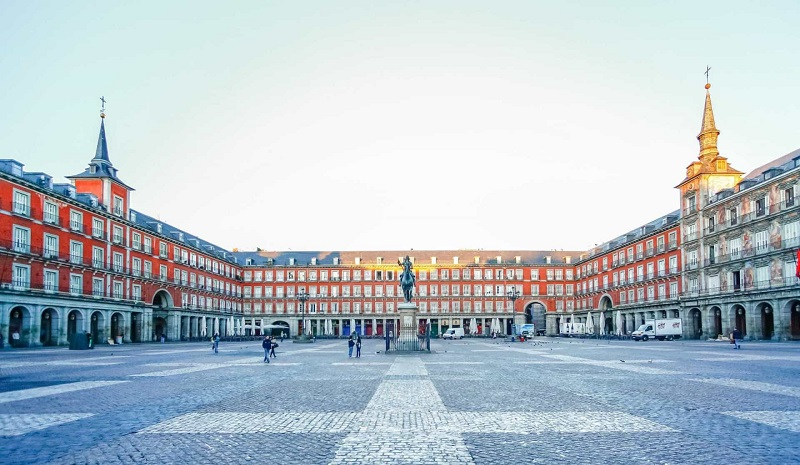

Kyoto is the cultural heart of Japan, famous for its classical Buddhist temples, gardens, imperial palaces, and traditional wooden houses.

Paris, France's capital, is a major European city and a global center for art, fashion, gastronomy, and centuries-old culture.

Madrid, Spain's central capital, is a city of elegant boulevards and expansive, manicured parks like the Buen Retiro. It’s renowned for rich repositories of European art.

Rome, Italy's capital, is a sprawling, cosmopolitan city with nearly 3,000 years of globally influential art, architecture, and history on display.

New York City comprises 5 boroughs sitting where the Hudson River meets the Atlantic Ocean. At its core is Manhattan, a densely populated borough that’s among the world’s major commercial, financial, and cultural centers.